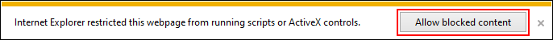
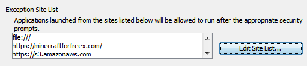
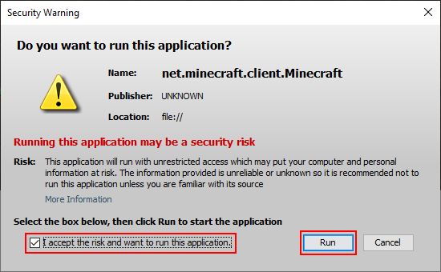

Setup Java for Minecraft 1.5.2
Note: no configuration is required if you're playing Eaglercraft.
While there are several steps in order to get the old Minecraft 1.5.2 version working, you'll only need to do this once, and then you can enjoy all three singeplayer modes, as well as multiplayer if you're able to find an unofficial 1.5.2 server. Of course, you can always play Eaglercraft on a modern browser and not have to do all these steps.
Download Java
You will need to download Java, and make sure you are downloading it on Internet Explorer (IE) so the website can detect whether to give you the 32-bit or 64-bit version. Even if you already have it, it's a good idea to download it anyway to make sure you have latest version.
IE may automatically stop Java from running when Minecraft tries to load. Make sure you click on Allow blocked content when IE asks you.

If the game doesn't load, you need to change some settings in the Java Control Panel (JCP).
Java Control Panel
To access the JCP:
- Press the button to start a search.
- type in configure java and press Enter.
Once you are in the JCP, take the steps below to ensure your security settings and browser allows Java to run successfully.
- Go to the Security tab and make sure Enable Java content in the browser and Web Start applications is checked.
- At the bottom you will see an Exception Site List. You will need to add three entries to this list, so click on Edit Site List... to begin.
- Click on Add and type in https://minecraftforfreex.com/. Then click on Add again. A popup will appear to confirm; just click on Continue.
- Do the previous step again, but type in file:/// instead. Yes, there are three slashes.
- Finally, type in https://s3.amazonaws.com. Click OK to save these entries.
When you're done, it should look like this image. If everything matches, click on OK.

Restart Minecraft
Try to load Minecraft again and Java should ask if you want to run the application. Check off the box for I accept the risk and want to run this application. and then click on Run. You should now be able to play Minecraft.

No Sound?
If your game has no sound, you'll need do the following:
- Download the resources zip file.
- Unzip the resources folder to your computer.
- Press the button to search and then copy and paste this: %appdata%/.minecraft.
- Hit Enter to open the directory. Now copy the resources folder you unzipped earlier into this directory.
- Restart Minecraft and then you should have sound.